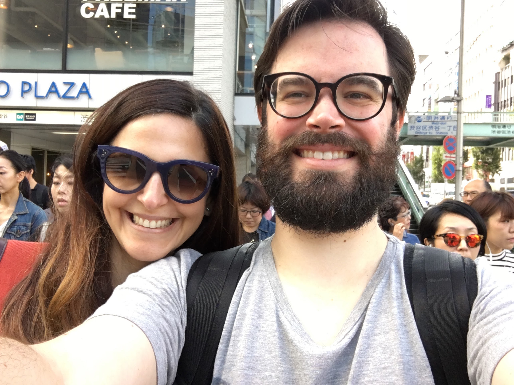

Hi, We are Ricardo Parro and Caterine Parro.
We've been helping startups going from a very early stage to success for the last 10 years. Ricardo as a developer and CTO, Caterine as a Product Manager.
We are married and as a couple, we function as a team. That applies to our personal relationship but also to business and work. Besides working in different areas in the past we had to dive in each others area and learn with each other. The bridge between product and tech is usually quite difficult to attain but in our case was a match made in heaven as we consider product and tech as the same area where the goal is to build great products that are sellable.
